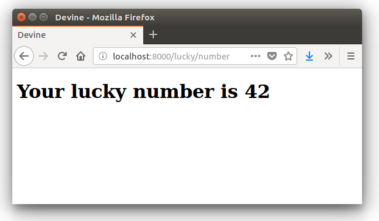

Travaux Pratiques - 1 -
-
Après avoir installé et configuré votre IDE, atteindre la dernière étape de ce premier tutoriel, à savoir :

-
Concevoir une application web répondant aux spécifications suivantes :
L’utilisateur cherche à trouver un nombre retenu par l’application de façon « aléatoire », sur une plage d’amplitude allant de zéro à, disons, 50.
Chaque nombre sera représenté par une cellule td d’un tableau html. Lorsque l’utilisateur soumet une proposition (clique sur une cellule/nombre), l’application répond « valeur trop petite », « valeur trop grande » ou « Trouvé ! ». Durant les tentatives, l’application montre les cellules déjà sélectionnées par l’utilisateur (prévoir une classe CSS dédiée). La partie s’arrête lorsque l’utilisateur a trouvé le bon nombre.
|
| L’application ne sauvegardera aucune donnée du jeu (historique utilisateur) sur le serveur (les « données de sessions » seront transmises au client – et donc portées par celui-ci – un exemple de code est donné en annexe). |
Étapes à suivre :
-
Traduire le code PHP de l’annexe en un prjet symfony (avec contrôleur index et vue twig)
-
Faire évoluer l’application afin qu’elle réponde aux attentes (exprimées ci-dessus).
-
Présentation des nombres dans une matrice 10 x 10
-
L’utilisateur pourra relancer autant de parties qu’il le souhaite. Comme il se doit, l’application sera capable de gérer plusieurs utilisateurs en même temps.
-
Lorsque que le nombre est trouvé, l’application affiche un des messages suivants :
-
« Vous avez de la chance !» si le nombre d’essai du joueur est inférieur au nombre optimal (à déterminer après avoir étudié le principe de la recherche dichotomique - lien wikipédia ci-dessous).
-
« Votre stratégie a été la bonne » si le nombre d’essai du joueur est égale au nombre optimal.
-
« Vous avez débordé de n tentatives » où n est le nombre de tentatives au-delà du nombre optimal.
-
Pour déterminer le message à présenter, référez-vous aux caractéristiques d’efficacité de la recherche dichotomique : https://fr.wikipedia.org/wiki/Dichotomie
-
Optionnel, pour les plus avancés :
-
L’utilisateur peut étendre l’amplitude de la matrice.
-
Proposer une version qui n’expose pas la valeur à trouver au client (prévoir un cryptage symétrique du nombre – l’expéditeur est le destinataire).
-
Ressources à prendre en compte
-
Génération pseudo-aléatoire d’un nombre : http://php.net/manual/fr/function.mt-rand.php
-
Legacy code en annexe pour commencer.
Annexe TP-1 - code legacy (prototype)
<?php
// exploitation des données reçues (ou attendues) – on attend un couple i=n
if (isset($_GET['i'])) :
$iChoixJoueur = (int) $_GET['i'];
// force l'interprétation de la valeur en un entier
else :
$iChoixJoueur = -1;
endif;
// ou (même traitement que ci-dessus)
// $iChoixJoueur = isset($_GET['i']) ? (int) $_GET['i'] : -1; //opérateur ternaire
// on récupère l'historique des tentatives (une chaîne de caractères en fait)
if (empty($_GET['histo'])) :
$histo = '----------w--------------';
// TODO : placer le numéro gagnant (w)iner de façon aléatoire
else:
$histo = $_GET['histo'];
endif;
// mise à jour de l'historique : prise en compte du choix utilisateur
if ($iChoixJoueur >= 0 && $iChoixJoueur < strlen($histo)) :
$histo[$iChoixJoueur] = 'j';
endif;
?>
<!DOCTYPE html>
<html lang="fr">
<head>
<meta charset='utf-8' />
<title>À la recherche du nombre</title>
<style type="text/css">
.normal {
border: 1px solid black;
}
.dejajoue {
border: 1px solid black;
background-color: lightgreen;
}
</style>
</head>
<body>
<h2>à la recherche du nombre</h2>
<table>
<tbody>
<tr>
<?php
// mode debug : var_dump($histo);
// TODO : il faudrait mieux appliquer la classe "dejajoue"
// à toutes les cellules déjà jouées
for ($i=0; $i < strlen($histo); $i++) : // strlen donne le nb de caractères
if ($i == $iChoixJoueur) : ?>
<td class = "dejajoue">
<?php else : ?>
<td class = "normal">
<?php endif; ?>
<a href="?i=<?php echo $i ?>&histo=<?php echo $histo ?>">
<?php echo $i; ?>
</a>
</td>
<?php endfor; ?>
</tr>
</tbody>
</table>
</body>
</html>